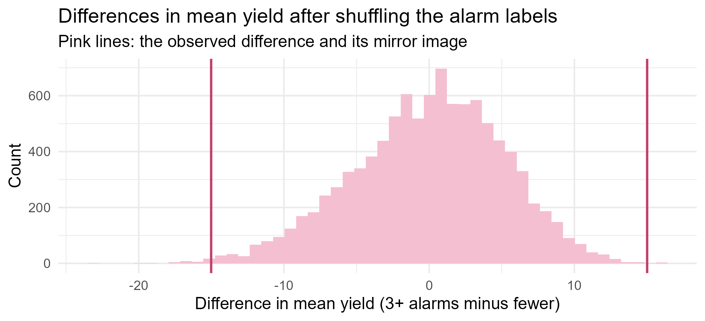

Module 0 · Lesson 13 of 14 Week 13 of 160 About 5–7 hours
Hypothesis testing
Could this pattern be just chance?
Set up hypotheses, compute and interpret p-values, run permutation tests, t-tests and chi-square tests, and reason about errors, power and practical importance.
Is the reactor really running below its 60% yield target? Does the night shift really get better results? Did cleaning the heat exchanger actually help? Data always contain some pattern, because random variation creates patterns all by itself. A hypothesis test asks whether the pattern you see is too strong to be explained by chance alone. This lesson covers the logic of testing, the tests you’ll use most often, and, just as important, the ways tests get misused.
Think of a hypothesis test as a skeptic who says “nah, that’s just noise” to everything. Your data has to be convincing enough to change the skeptic’s mind. Today you’ll learn exactly how convincing is convincing enough.
In this lesson you’ll:
- set up null and alternative hypotheses
- understand what a p-value is, and what it isn’t
- run a test by simulation, with a permutation test
- use one-sample, two-sample and paired t-tests
- use chi-square tests for counts
- think about errors, power and practical importance
The logic of a test
A hypothesis test works like a criminal trial. The defendant is presumed innocent, and the prosecution must present evidence strong enough to make innocence implausible. If it can’t, the verdict is “not guilty”, which isn’t the same as “innocent”.
- State two hypotheses. The null hypothesis H_0 is the skeptical “nothing is going on” position: no difference, no effect, the supplier is telling the truth. The alternative hypothesis H_A is what you’re looking for evidence of.
- Choose a test statistic: a number that measures how far the data are from what H_0 predicts.
- Find its distribution if H_0 were true, called the null distribution, by theory or by simulation.
- Compute the p-value: how likely a result at least as extreme as yours would be, if H_0 were true.
- Conclude in context. A small p-value is evidence against H_0.
Here’s an example. A supplier promises that only 5% of their drums leak. You inspect 100 drums and find 11 leaky ones. Bad luck, or is the supplier’s claim wrong?
- H_0: the leak rate is p = 0.05, as promised. H_A: it’s higher, p > 0.05.
- The test statistic is the number of leaky drums, 11.
- If H_0 is true, the count is binomial with n = 100 and p = 0.05, so we’d expect about 5.
- You only care whether the rate is worse than promised, so “at least as extreme” means 11 or more.
1 - pbinom(10, size = 100, prob = 0.05) # P(X >= 11)
#> [1] 0.01147241
binom.test(11, 100, p = 0.05, alternative = "greater")$p.value # the same, in one step
#> [1] 0.01147241If the supplier were telling the truth, 11 or more leaky drums would turn up only about 1% of the time. That’s strong evidence that the true leak rate is higher than 5%. A simulation tells the same story:
set.seed(13)
null_counts <- rbinom(10000, size = 100, prob = 0.05)
mean(null_counts >= 11)
#> [1] 0.0124Your turn. In a second shipment of 100 drums you find 8 leaky ones. Use binom.test() to get the one-sided p-value for the same hypotheses.
Change the 11 to 8: binom.test(8, 100, p = 0.05, alternative = "greater")$p.value.
binom.test(8, 100, p = 0.05, alternative = "greater")$p.valueAbout 0.13. Eight leaky drums can easily happen by chance when the true rate is 5%, so this shipment gives no real evidence against the supplier.
p-values
The p-value is the probability, computed assuming H_0 is true, of getting a result at least as extreme as the one you observed. A small p-value means the data would be surprising if H_0 were true.
Many fields compare the p-value with a significance level \alpha chosen in advance, usually 0.05. If p \le \alpha, you reject H_0 and call the result statistically significant. If p > \alpha, you fail to reject H_0. Not “accept”: absence of evidence isn’t evidence of absence.
The p-value is easy to misread. It is not:
- the probability that H_0 is true;
- the probability that the result is “due to chance”;
- a measure of how big or important an effect is.
In 2016, the American Statistical Association issued a formal statement warning against exactly these misreadings, and against treating 0.05 as a magic line. Report the p-value itself, together with an estimate of the effect and its confidence interval.
A test by simulation: the permutation test
Batches with 3 or more alarms seem to have much lower yields:
d <- batches[!is.na(batches$alarms), ]
many <- d$alarms >= 3
tapply(d$yield_pct, many, mean)
#> FALSE TRUE
#> 59.21143 44.20000
observed <- mean(d$yield_pct[many]) - mean(d$yield_pct[!many])
observed
#> [1] -15.01143A gap of 15 points! But only 4 batches had that many alarms. Could a gap like this arise by chance, with alarms having nothing to do with yield? If H_0 is true, the “many alarms” labels are just arbitrary tags, so shuffling them among the batches should produce gaps as big as ours fairly often. Shuffle 10,000 times and see:
set.seed(13)
null_diffs <- replicate(10000, {
shuffled <- sample(many) # the same labels, randomly reassigned
mean(d$yield_pct[shuffled]) - mean(d$yield_pct[!shuffled])
})
mean(abs(null_diffs) >= abs(observed)) # two-sided p-value
#> [1] 0.0034Show the code
ggplot(data.frame(diff = null_diffs), aes(x = diff)) +
geom_histogram(bins = 50, fill = "#F4C0D1", color = NA) +
geom_vline(xintercept = c(observed, -observed), color = "#C2416C", linewidth = 0.8) +
labs(title = "Differences in mean yield after shuffling the alarm labels",
subtitle = "Pink lines: the observed difference and its mirror image",
x = "Difference in mean yield (3+ alarms minus fewer)", y = "Count") +
theme_minimal(base_size = 12)
This is a permutation test. It needs no formulas and no normality assumption, only the idea that under H_0 the labels don’t matter. That makes it perfect for small groups like these 4 batches, where a normality assumption would be impossible to check. Only about 3 shuffles in 1,000 give a gap as big as the real one, so that’s strong evidence that many-alarm batches really do yield less.
Even so, this is observational data, so it doesn’t prove that the alarms cause the low yields. A fouled heat exchanger or a bad lot of raw material could cause both. To show cause and effect, you’d need a designed experiment, which Module 2 covers.
t-tests
The t distribution from the last lesson gives formula-based tests for means.
One-sample t-test
The plant’s target yield is 60%, and our 40 batches average 57.6%. Is the process really below target? The test statistic counts how many standard errors \bar{x} is from the target value \mu_0:
t = \frac{\bar{x} - \mu_0}{s / \sqrt{n}} ,
and under H_0 it follows a t distribution with n - 1 degrees of freedom.
x <- batches$yield_pct
t_stat <- (mean(x) - 60) / (sd(x) / sqrt(length(x)))
t_stat
#> [1] -1.526084
2 * pt(-abs(t_stat), df = length(x) - 1) # two-sided p-value
#> [1] 0.1350589
t.test(x, mu = 60)
#>
#> One Sample t-test
#>
#> data: x
#> t = -1.5261, df = 39, p-value = 0.1351
#> alternative hypothesis: true mean is not equal to 60
#> 95 percent confidence interval:
#> 54.52947 60.76553
#> sample estimates:
#> mean of x
#> 57.6475Now you can read the whole t.test() output: the t statistic, the degrees of freedom, the p-value, the alternative hypothesis, the confidence interval and the estimate. With p = 0.135, there isn’t convincing evidence that the process is off target: the shortfall could easily be batch-to-batch noise. Notice that the 95% interval, 54.5% to 60.8%, contains 60. Two-sided tests and confidence intervals always agree like this: the interval excludes \mu_0 exactly when p < 0.05.
If, before seeing the data, you only cared about one direction, you can use a one-sided test with alternative = "greater" or "less", as with the drums. Choosing the direction after looking at the data is cheating, because it halves the p-value.
Two-sample t-test
To compare the means of two independent groups, t.test() takes a formula, outcome ~ group. Do the day and night shifts get different yields?
t.test(yield_pct ~ shift, data = batches)
#>
#> Welch Two Sample t-test
#>
#> data: yield_pct by shift
#> t = -0.63222, df = 28.328, p-value = 0.5323
#> alternative hypothesis: true difference in means between group day and group night is not equal to 0
#> 95 percent confidence interval:
#> -8.710029 4.599928
#> sample estimates:
#> mean in group day mean in group night
#> 56.72273 58.77778The night shift averaged about 2 points more, but p = 0.53: a difference like that is very common by chance alone. There’s no evidence that the shifts differ. By default, R runs Welch’s t-test, which doesn’t assume the two groups have equal variances. That’s the safe choice.
Paired t-test
Sometimes the measurements come in pairs: the same heat exchanger before and after cleaning, or the same sample measured on two instruments. Then you analyze the differences within each pair. Here are some (made-up) heat-transfer coefficients, in W/(m²·K), for 8 exchangers before and after cleaning:
before <- c(410, 385, 450, 398, 420, 372, 440, 405)
after <- c(452, 401, 489, 431, 447, 398, 472, 438)
after - before
#> [1] 42 16 39 33 27 26 32 33
t.test(after, before, paired = TRUE)
#>
#> Paired t-test
#>
#> data: after and before
#> t = 10.816, df = 7, p-value = 1.273e-05
#> alternative hypothesis: true mean difference is not equal to 0
#> 95 percent confidence interval:
#> 24.22285 37.77715
#> sample estimates:
#> mean difference
#> 31Cleaning improved the coefficient by 31 W/(m²·K) on average, and the p-value is tiny. Now watch what happens if you wrongly treat the before and after measurements as two independent groups:
t.test(after, before)$p.value
#> [1] 0.05163782The p-value is far larger, because the exchangers differ a lot from each other (from 372 to 450 before cleaning). Pairing removes those differences, leaving a much clearer view of the cleaning effect. Use a paired test whenever the design pairs the data.
Your turn. Is the mean purity of the batches different from 99%? Return the p-value of a one-sample t-test.
t.test(x, mu = 99)$p.value, with x the purity column.
t.test(batches$purity_pct, mu = 99)$p.valueYour turn. Compare the purity of the batches that ran hotter than 185 °C with the rest, using a Welch two-sample t-test. Return the p-value. (The two batches with no temperature are removed for you.)
t.test(purity_pct ~ hot, data = h)$p.value
h <- batches[!is.na(batches$temp_C), ]
h$hot <- h$temp_C > 185
t.test(purity_pct ~ hot, data = h)$p.valueAbout 0.00005. Hot batches average 98.3% purity against 99.1% for the rest, and that gap is far too big to be chance.
Your turn. Six samples were each measured on two instruments, an old one and a new one. Is there a systematic difference between them? Run a paired t-test and return the p-value.
Give t.test() both vectors and paired = TRUE, since each sample was measured twice.
old <- c(5.12, 4.87, 6.03, 5.55, 4.98, 5.71)
new <- c(5.20, 4.92, 6.14, 5.59, 5.07, 5.78)
t.test(new, old, paired = TRUE)$p.valueAbout 0.001: the new instrument reads about 0.07 units higher, consistently. An unpaired test would give p = 0.79 and miss this completely, because the samples differ from each other far more than the instruments do.
Errors and power
A test can go wrong in two ways:
| H_0 is true | H_0 is false | |
|---|---|---|
| Reject H_0 | Type I error (false positive), probability \alpha | Correct: the test detected the effect |
| Don’t reject H_0 | Correct | Type II error (false negative), probability \beta |
The significance level \alpha is the Type I error rate you accept. The power of a test, 1 - \beta, is the probability of rejecting H_0 when it’s false: the chance of detecting a real effect. Power increases with:
- a larger sample,
- a larger true effect,
- less variability in the data,
- a larger \alpha, at the cost of more false positives.
power.t.test() computes the power of a two-sample t-test, or the sample size needed for a given power. Say a new catalyst really raises the yield by 5 points, and yields vary with an SD of 10. How many trial batches should you run with each catalyst?
power.t.test(n = 20, delta = 5, sd = 10)$power # with 20 batches per catalyst
#> [1] 0.3377084
power.t.test(power = 0.80, delta = 5, sd = 10)$n # batches per catalyst for 80% power
#> [1] 63.76576With 20 batches each, the trial would miss a real 5-point improvement about two times in three! You’d need about 64 per catalyst for 80% power, the usual target. Underpowered studies are a real problem: they usually miss true effects, and when they do find one, its estimated size tends to be exaggerated.
Your turn. The same catalyst trial runs 30 batches with each catalyst. What’s its power?
power.t.test(n = ..., delta = ..., sd = ...)$power, where n is the size of each group.
power.t.test(n = 30, delta = 5, sd = 10)$powerAbout 48%: this trial would miss the real improvement about half the time.
Your turn: false positives. Simulate 2,000 two-sample t-tests where H_0 is true: both groups of 15 come from the same normal distribution. What proportion of the p-values are below 0.05?
The proportion of TRUEs in p_values < 0.05.
set.seed(11)
p_values <- replicate(2000, t.test(rnorm(15), rnorm(15))$p.value)
mean(p_values < 0.05)About 5%: when H_0 is true, the test rejects it at the rate \alpha. Try hist(p_values). When H_0 is true, p-values are uniformly distributed!
Chi-square tests for counts
Goodness of fit
A plant has four identical pumps. Over a year, they fail 12, 7, 5 and 16 times. Are some pumps worse than others, or is this just chance?
fails <- c(12, 7, 5, 16)
expected <- rep(sum(fails) / 4, 4)
sum((fails - expected)^2 / expected) # the chi-square statistic
#> [1] 7.4
chisq.test(fails)
#>
#> Chi-squared test for given probabilities
#>
#> data: fails
#> X-squared = 7.4, df = 3, p-value = 0.06018The chi-square statistic, \chi^2 = \sum (O - E)^2 / E, adds up the squared gaps between the observed counts O and the counts expected under H_0, E. Under H_0, it follows a chi-square distribution with (number of categories − 1) degrees of freedom. Here p = 0.06: suggestive, but not quite significant at the 5% level. A sensible engineer would keep a close eye on pump 4, and collect another year of data.
Test of independence
Are two categorical variables related? Here’s on-spec against shift:
spec_shift <- table(batches$shift, batches$on_spec)
spec_shift
#>
#> FALSE TRUE
#> day 6 16
#> night 3 15
chisq.test(spec_shift)
#> Warning in chisq.test(spec_shift): Chi-squared approximation may be incorrect
#>
#> Pearson's Chi-squared test with Yates' continuity correction
#>
#> data: spec_shift
#> X-squared = 0.17523, df = 1, p-value = 0.6755p = 0.68, so there’s no evidence that the shifts differ in their on-spec rates. But notice the warning. The chi-square approximation needs every expected count to be at least about 5, and here two of them are only about 4 and 5, because there are so few off-spec batches. When counts are small, use Fisher’s exact test instead:
fisher.test(spec_shift)$p.value
#> [1] 0.4760915Same conclusion: no evidence of a difference.
A significant test isn’t the end of the story
Here’s a (made-up) example that every engineer should see once. Two catalysts are tried on two grades of raw material:
| High-grade feed | Low-grade feed | Overall | |
|---|---|---|---|
| Catalyst X | 81 of 87 on spec (93%) | 192 of 263 on spec (73%) | 273 of 350 (78%) |
| Catalyst Y | 234 of 270 on spec (87%) | 55 of 80 on spec (69%) | 289 of 350 (83%) |
Overall, Y looks better. But X is better on both feeds! X was mostly used on the difficult low-grade feed, and that dragged its overall rate down. A trend that reverses when you split the data into groups is called Simpson’s paradox, and the feed grade here is a confounder. A test on the overall table would correctly say “catalyst and on-spec are related”, but it can’t tell you why. Always think about what else differs between the groups.
Your turn. The plan was to use catalyst A in 40% of batches, and B, C and D in 20% each. The actual counts were 10, 12, 9 and 9. Did the plant stick to the plan? Return the p-value of the chi-square goodness-of-fit test.
chisq.test() takes the planned probabilities through its p argument: p = c(0.4, 0.2, 0.2, 0.2).
counts <- c(10, 12, 9, 9)
chisq.test(counts, p = c(0.4, 0.2, 0.2, 0.2))$p.valueAbout 0.21. Catalyst A was used less than planned, but not by more than chance could explain.
Your turn. Is being on spec related to running hot (above 185 °C)? The counts are small, so use Fisher’s exact test, and return its p-value.
fisher.test(tab)$p.value
tab <- table(hot = batches$temp_C > 185, on_spec = batches$on_spec)
tab
fisher.test(tab)$p.valueAbout 0.00008: very strong evidence that running hot and going off spec go together.
Significance is not importance
- With huge samples, trivial differences become significant. A plant logging a million batches could find a 0.01-point difference in yield with a tiny p-value, and it would mean nothing in practice. Always report the size of the effect, with its confidence interval.
- With small samples, important differences may not be significant. “Not significant” often just means “not enough data”.
- Many tests, many false positives. Run 20 tests on pure noise at \alpha = 0.05, and you expect about one “significant” result. Testing lots of things and reporting only the significant ones (sometimes called p-hacking) fills the scientific literature with false findings. The simplest fix, the Bonferroni correction, tests each of m hypotheses at level \alpha/m. Module 10 covers better methods.
Challenge round
Challenge 1 · The multiple-testing trap. An analyst runs 20 t-tests on pure noise. What’s the chance that at least one of them comes out “significant”? Simulate it 300 times.
For one analyst, you want to know whether any of their 20 p-values is below 0.05.
any(p < 0.05)
set.seed(20)
any_false <- replicate(300, {
p <- replicate(20, t.test(rnorm(10), rnorm(10))$p.value)
any(p < 0.05)
})
mean(any_false)About two-thirds! The exact answer is 1 - 0.95^{20} \approx 0.64. Run enough tests and “significant” results are almost guaranteed, even when nothing is going on.
Challenge 2 · Your own permutation test. Do batches with a residence time above 45 minutes have higher yields? Complete the permutation test of the difference in mean yields, and return the two-sided p-value.
Shuffle the labels with sample(long).
The p-value is the proportion of shuffled differences at least as far from zero as the observed one: mean(abs(null_diffs) >= abs(observed)).
long <- batches$residence_min > 45
observed <- mean(batches$yield_pct[long]) - mean(batches$yield_pct[!long])
set.seed(12)
null_diffs <- replicate(10000, {
shuffled <- sample(long)
mean(batches$yield_pct[shuffled]) - mean(batches$yield_pct[!shuffled])
})
mean(abs(null_diffs) >= abs(observed))Only about 4 shuffles in 10,000 give a gap as big as the real 10 points, so the p-value is tiny: very strong evidence that longer residence times go with higher yields.
Quick quiz
1. What is a p-value?
It’s computed assuming H_0, so it can’t be the probability that H_0 is true.
2. A test gives p = 0.40. Which statement is right?
Failing to reject isn’t the same as proving H_0. With more data, a real effect might become clear.
3. What is a Type I error?
Its probability is the significance level \alpha. Missing a real effect is a Type II error.
4. Which change increases the power of a test?
More data shrinks the standard error, which makes real effects easier to tell apart from noise.
5. Which design calls for a paired t-test?
Before-and-after measurements on the same units come in pairs, so you analyze the within-unit differences.
6. A study of a million batches finds that a new stirrer raises the yield by 0.01 points, with p < 0.0001. What’s the best summary?
With huge samples, tiny effects become significant. Whether an effect matters is a question about its size, not its p-value.
Wrap-up
You can now tell real effects from noise. Here’s what you can do:
- Set up a test: a null hypothesis H_0 (“nothing going on”) against an alternative H_A.
- Read p-values: the probability, if H_0 were true, of a result at least as extreme as yours. Small is evidence against H_0; large doesn’t prove it.
- Shuffle: permutation tests build the null distribution by shuffling labels, with no formulas needed.
- Compare means: one-sample, two-sample (Welch, R’s default) and paired t-tests. Pair whenever the design pairs the data.
- Compare counts: chi-square tests for goodness of fit and independence, or Fisher’s exact test when the counts are small.
- Plan for power: larger samples, bigger effects and less noise all help you detect real effects.
- Keep perspective: significance isn’t importance, many tests mean many false positives, and confounders can fool any test.
TipPractice in RStudio (optional, about 75 minutes)
Work in week13.R.
- Three questions, three tests. Answer each with the right test, and write each conclusion in a full sentence with the estimate, a confidence interval and the p-value:
- Is the mean residence time different from 45 minutes?
- Do catalysts C and D differ in mean yield? (
subset()the two catalysts first.) - Is the catalyst related to being on spec? (What does R’s warning mean, and what should you do about it?)
- Power curves. Use
power.t.test()to compute the power for group sizes from 5 to 100, with a difference of 5 and an SD of 10. Plot power against group size, and add a horizontal line at 0.8. - Bonferroni in action. Repeat Challenge 1, but count a result as significant only when p < 0.05/20. What fraction of analysts now find a false positive?
- Simpson’s paradox. Rebuild the catalyst X and Y table in R as a three-way table with
array(), compute the on-spec rates by feed grade, and plot them. Then explain the paradox in your own words, in a comment.
NoteKey words from this lesson
- Null and alternative hypotheses
- H_0 is the “no effect” claim being tested; H_A is the claim you’re looking for evidence of.
- Test statistic
- A number that measures how far the data are from what H_0 predicts.
- Null distribution
- The distribution of the test statistic if H_0 is true.
- p-value
- The probability, if H_0 were true, of a test statistic at least as extreme as the one observed.
- Significance level
- The threshold \alpha, chosen in advance, below which you reject H_0.
- Permutation test
- A test whose null distribution comes from repeatedly shuffling the group labels.
- Type I and Type II errors
- Rejecting a true H_0 (a false positive), and failing to reject a false H_0 (a false negative).
- Power
- The probability that a test rejects H_0 when a particular alternative is true.
- Chi-square test
- A test that compares observed counts with the counts expected under H_0.
- Simpson’s paradox
- A trend that appears in combined data but reverses within groups, because of a confounder.
NoteWant to read more?
- Introduction to Modern Statistics, “Hypothesis testing with randomization”, “Decision errors”, “Inference for comparing paired means” and “Inference for two-way tables”.
- Wasserstein and Lazar, “The ASA Statement on p-Values: Context, Process, and Purpose”, The American Statistician (2016). Short, readable and influential: six principles for using p-values well.